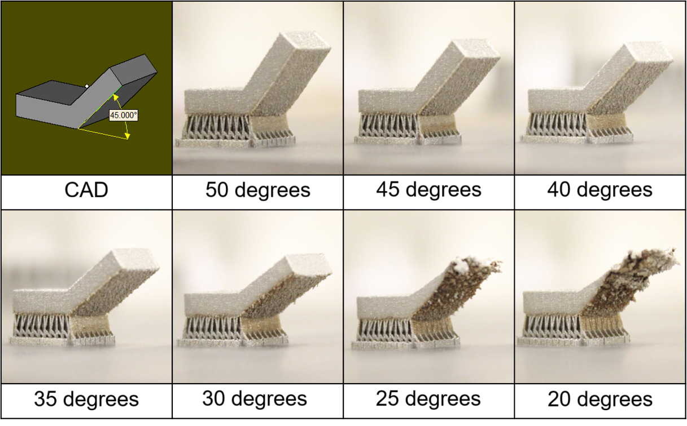
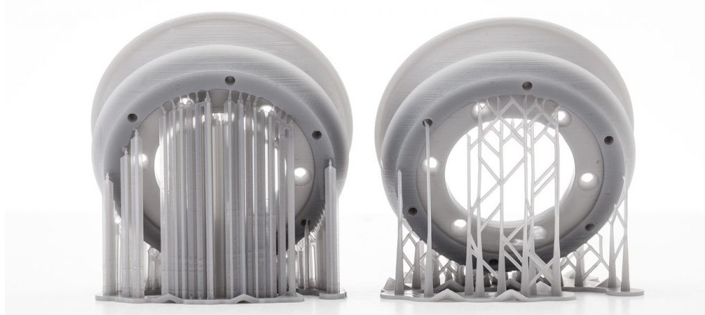
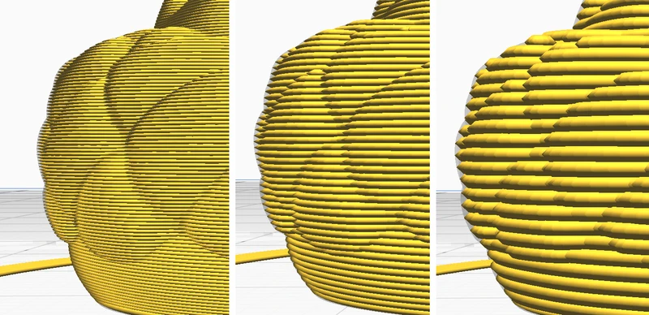

Nyomtató hibás szintezése
A szintezés a legfontosabb része a 3D nyomtatásnak, amit a fűtőlap alján lévő tekerőkkel lehet beállítani. Ha ez nincs helyesen beállítva, akkor a nyomtatáson kifejezetten meglátszik. Két féle probléma léphet elő ebben a helyzetben, az első az amikor túl közel van a nyomtatófej a fűtőlaphoz, ilyenkor túlságosan összenyomódik a filament és egy "u" alakot vesz fel egy egyenes csík helyett. A másik eshetőség, ha túl messze van a fej a laptól, ekkor nem nyomódik le eléggé a műanyag és vagy "o" alakot vesz fel vagy nem is tapad rá a lapra.

Megoldás:
A megoldás a nyomtató pontos szintezése, amit vagy megcsinál a nyomtató maga, amennyiben van ilyen funkciója, vagy pedig nekünk kell manuálisan elvégezni ennek a megvalósításához az alábbi linken találhat segítséget.
Filament tárolás
A filament a helytelen tárolása számtalan problémát hordoz magában. A legfontosabb dolog az, hogy vákumosan elzárt, naptól védett helyen tároljuk a filamentet. Ha ezt nem tesszük és például napos helyen tároljuk, akkor az UV sugárzástól sérül a műanyag szerkezete és emiatt törékennyé válik. Ha nem rakjuk lezárt tárolóba, akkor a párát tudja magába szívni az anyag, amitől sokkal kevésbé fog tapadni a fűtőlaphoz. Nagy probléma lehet a por is, mivel ha felhalmozódik a filamenten, akkor ez is képes gátolni a tapadást.
Megoldást:
Vákummentes zacskóban fénytől elzárva kell tárolni, ha huzamosabb ideig nem tervezzük használni.
Támasz elem
Gyakran probléma a 3D nyomtatás során, hogy egy hézagot kell áthidalni. Erre a legtöbb műanyag nem elég merev, ezért támasz elemet kell készíteni. Hasonló probléma fordul elő a 45° fölötti emelkedőnél. Ha elképzel egy fejjel lefelé álló piramist, a nyomtatónak minden egyes új külső sort a levegőre kell nyomtatnia, ez aránylag megoldható, mivel a mellette lévő még megfogja, azonban ha több ilyen sor kerül nyomtatásra, akkor minden egyes sorral szignifikánsan nő annak az esélye, hogy nem tapad semmihez, és ez egy láncreakciót okoz, mivel ha erre a nem létező részre szeretne még többször nyomtatni, az szintén nem lesz sikeres nyomtatva.
Megoldás:
A legtöbb slicer program képes automatikusan támasztó elemet készíteni, ha bepipáljuk generáláskor.
Rétegzett nyomtatás
Ha túlságosan rétegzettek a sorok a nyomtatás után, akkor nagy valószínűleg a rétegmagasság okozhatja a problémát. Ha ezt túl magasra hagyjuk, akkor gyakran nem képes elég részletesen nyomtatni az adott tárgyat.
Megoldás:
A slicer beállításaiban ezt is meg lehet találni, az általános magasság 0.2 mm, viszont a legtöbb képes még 0.12 mm, de még 0.05 mm magasságú szintet is képes nyomtatni.
